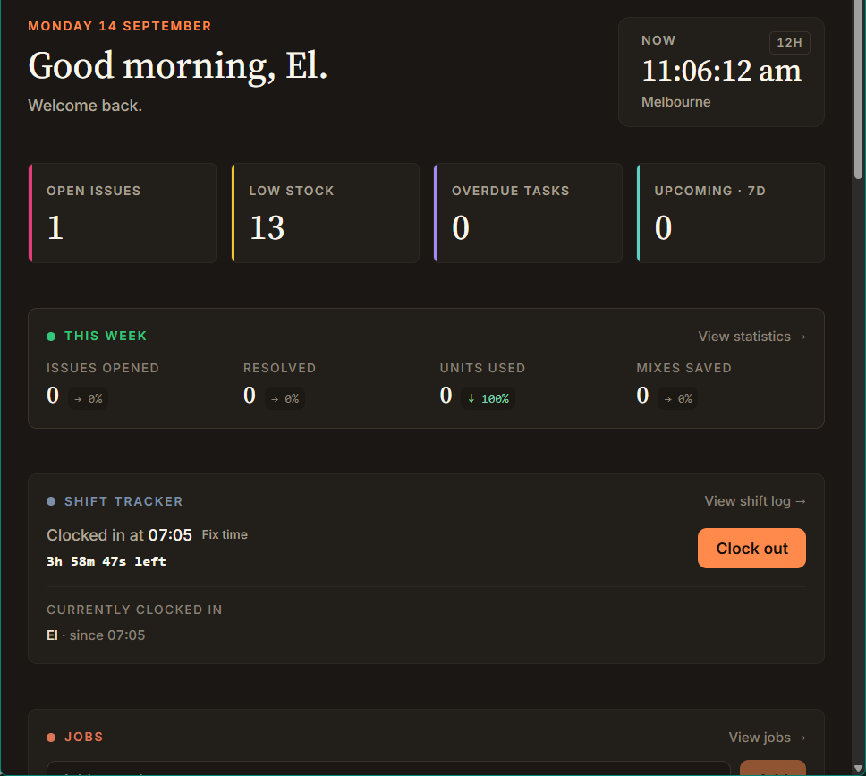
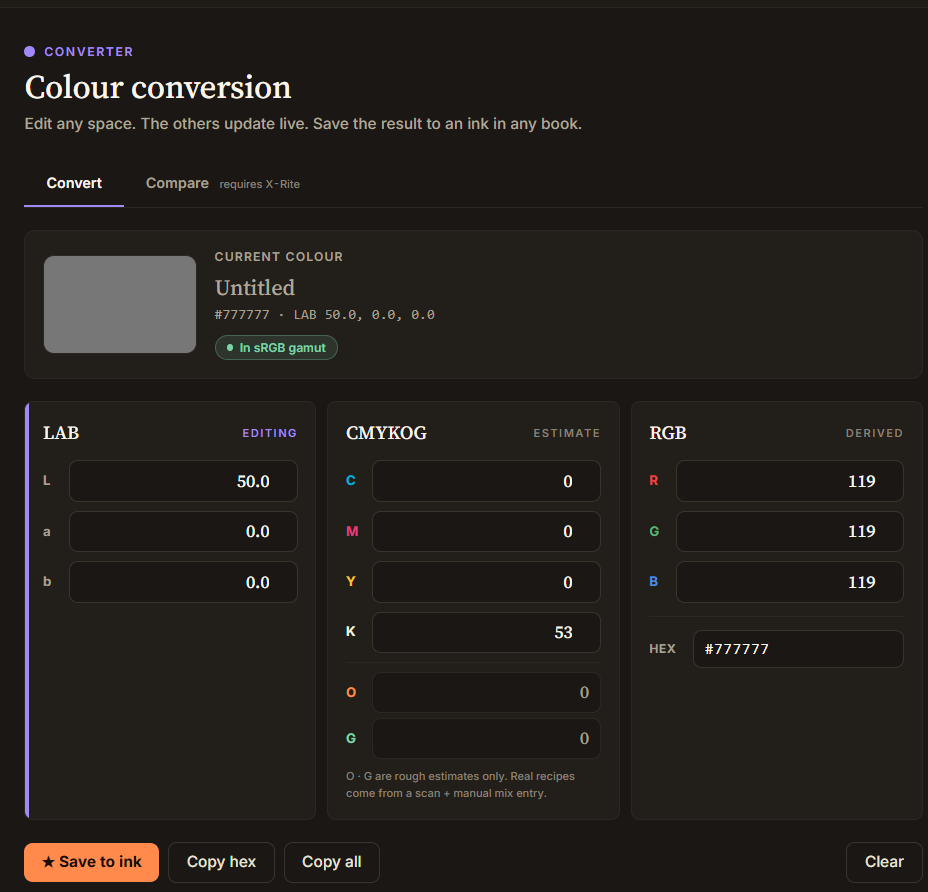
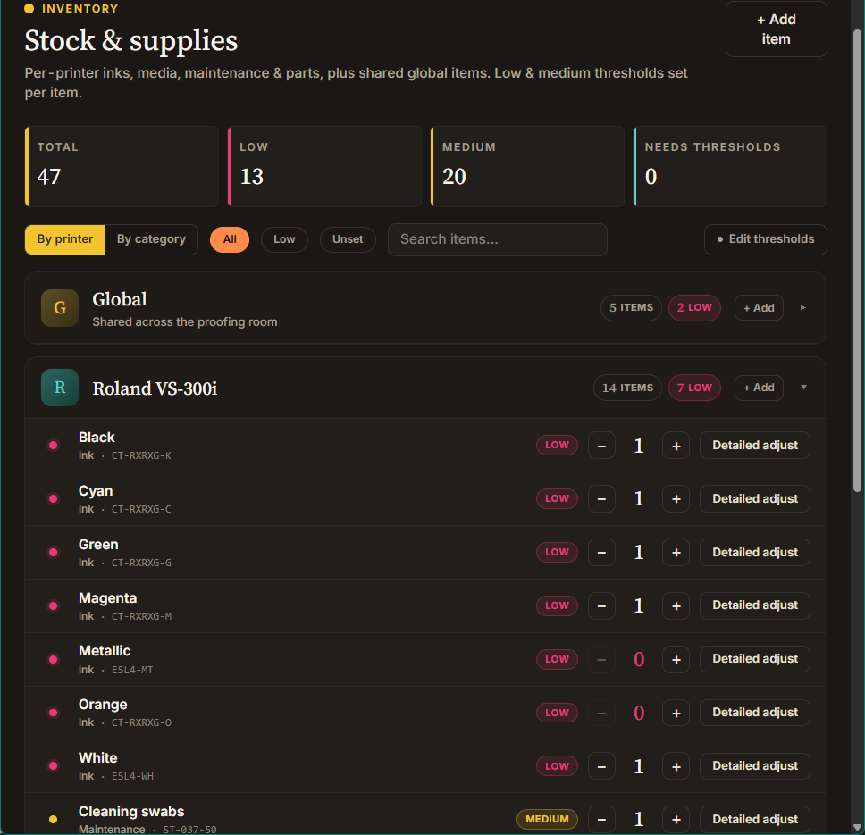

proofing room
node express preact vite sqlite
A self-hosted toolkit for the proofing room at work — one dashboard behind a PIN login stores jobs and data that used to be kept untracked: inventory and stock levels, an ink and Pantone book library, a LAB / CMYK / RGB colour converter, maintenance issues and technician visits, equipment records, customer profiles, ink density readings, and shift statistics.
Before this, there was basically no tracking or documentation system at all — files ended up in random drawers, in personal notebooks, on personal computers, wherever. The moment that actually started this project was a day I couldn't find any of the SOPs I needed and realised just how bad the situation had gotten.

how it works
It didn't start as one dashboard — it grew into one. The first pieces were small, single-purpose tools: a basic inventory tracker, a way to log when maintenance had been done. Those got used, so more tools got added the same way, and it grew from there into the dashboard it is now. You log in with a user and PIN and land on a launcher screen, and each tool from there is still its own self-contained little app under the hood — each one has a clear, checked-over boundary for what data goes in and out, so I can add a brand-new tool, or change an existing one, without the risk of accidentally breaking something unrelated elsewhere in the dashboard.


built with
A Node.js server handles requests from the browser and reads and writes to a SQLite database — a lightweight database that lives in a single file on the server rather than needing separate database software installed. Every piece of data coming in gets double-checked against a strict set of rules before it's accepted, to catch mistakes early. The screens you actually interact with are built with a lightweight cousin of React (a common toolkit for building interactive web interfaces). It runs on a small home server and is made reachable from the internet at tools.rgb-b.com through Cloudflare, without needing to open anything up directly to the wider internet. I'm currently doing a ground-up rebuild to tidy up the code and refresh the look.